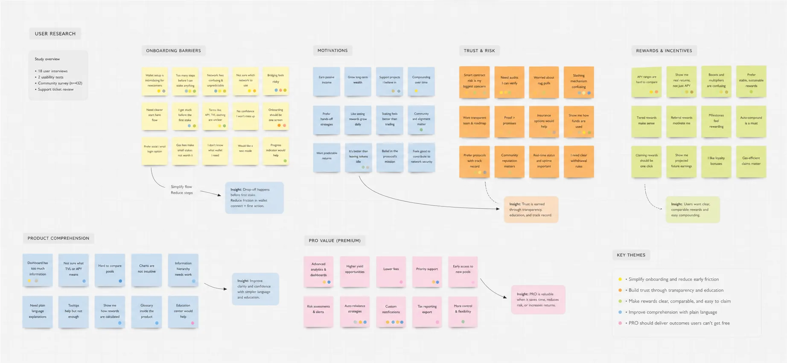
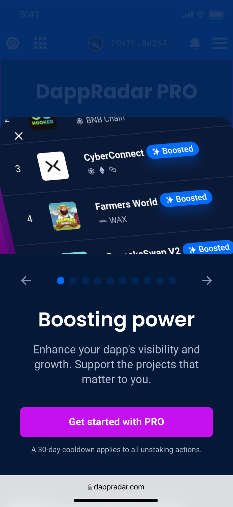
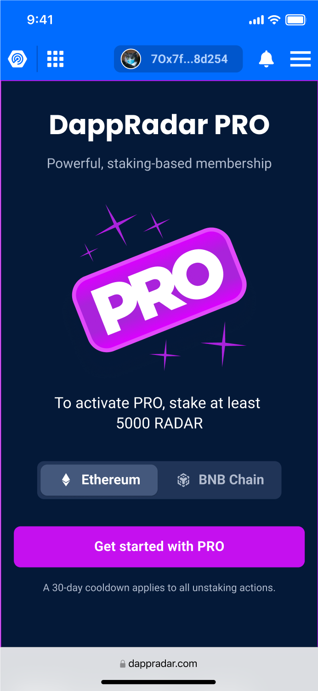
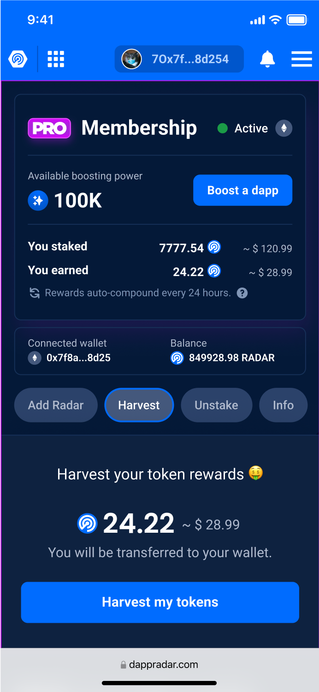

"5M+ tokens staked and 100+ new PRO subscribers in the first month - the simplicity paid off."
Overview
DappRadar launched RADAR token staking as a core monetization and retention mechanic - users who stake earn PRO benefits including advanced analytics, portfolio tracking, and exclusive data. My role was to design the staking experience from wallet connection through to active staking dashboard.
DappRadar PRO membership and its staking-based benefits.
My role
As the Product Designer, I redesigned the staking flow and oversaw the project from initial research through to final design validation.
The problem
The original staking model encouraged unsustainable growth and short-term engagement because of its high APY and lack of minimum staking requirements. The complexity typical of Web3 products also created a significant barrier to broader user adoption.
The goal
The primary goal was to increase long-term engagement through a 30-day cool-down period and a more sustainable APY, while making the experience easier for newcomers. Clear communication about these changes was essential. We aimed to simplify the Web3 user experience, showcase the value of PRO features, and attract more than 100 new PRO users within the first month.
Market research
The concept of PRO staking was born from the need to drive user engagement and loyalty. Market data revealed an opportunity for a staking mechanism that offered premium features and differentiated DappRadar from competing platforms.
I conducted a thorough analysis of competitor staking flows to identify gaps and opportunities. These findings informed our approach and helped us create a differentiated, compelling user experience.
Competitive analysis of staking models, interaction patterns, and onboarding approaches.
User research
We conducted user interviews and surveys to understand the needs and expectations of our users. We identified three main user personas: the Casual User, the Pro Trader, and the Enthusiast. Each has unique needs and expectations, shaping our design choices.

User research synthesis across onboarding, motivation, trust, rewards, and PRO value.
Casual User
Chad, 24 years
Location: Chiang Mai, Thailand
Job: Freelance Web Developer
Pain points
Wants quick returns but finds most staking options too complex or too long-term.
Finds Web3 interactions intimidating.
Needs
A simple, straightforward interface.
Clear information on expected returns and risks.
A low entry barrier to start staking.
Pro Trader
Alex, 38 years
Location: New York, USA
Job: Financial Analyst
Pain points
Wants to diversify investments but finds many platforms lack cross-chain support.
Looks for stable, long-term investment options.
Needs
A diversified pool for long-term staking.
Cross-chain staking options.
Tools to optimize investment strategies.
Enthusiast
Elena, 26 years
Location: Berlin, Germany
Job: Software Engineer
Pain points
Expects more benefits than APY alone from holding and staking a token.
Lacks clear information about the wider ecosystem.
Needs
Detailed ecosystem and token information.
PRO features with benefits beyond financial returns.
Transparent staking mechanics and future plans.
Approach
I briefed key stakeholders across product, engineering, and business teams to align on the staking model, technical constraints, edge cases, and success criteria. I translated these inputs into an activation flow that gave the team a shared reference before we moved into interface design.
I mapped every state of the staking flow - wallet not connected, insufficient balance, pending transaction, confirmed, earning. Each state got a dedicated design with clear next action and zero ambiguity. I removed all jargon from the primary flow and moved technical details (contract address, block confirmations) into expandable sections for power users.
Staking activation flow.
Mobile layout



Results
5M+RADAR tokens staked within the first month
100+New PRO subscribers acquired through staking
+41%Wallet connection completion rate vs. previous flow
3×Faster task completion vs. competitor staking UIs